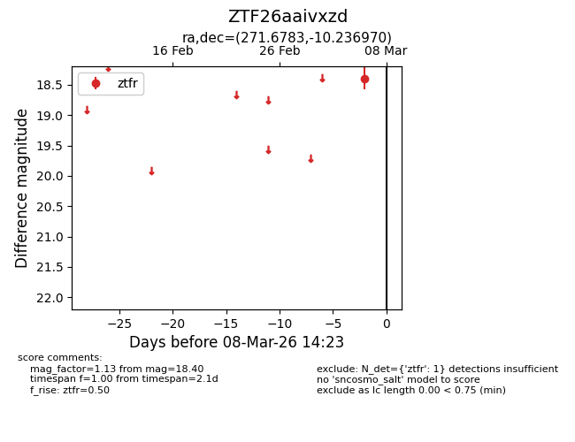
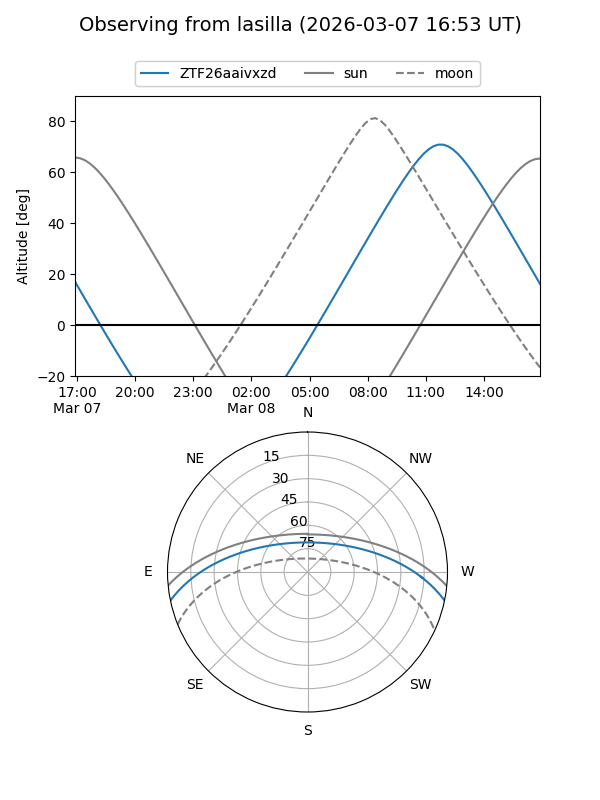
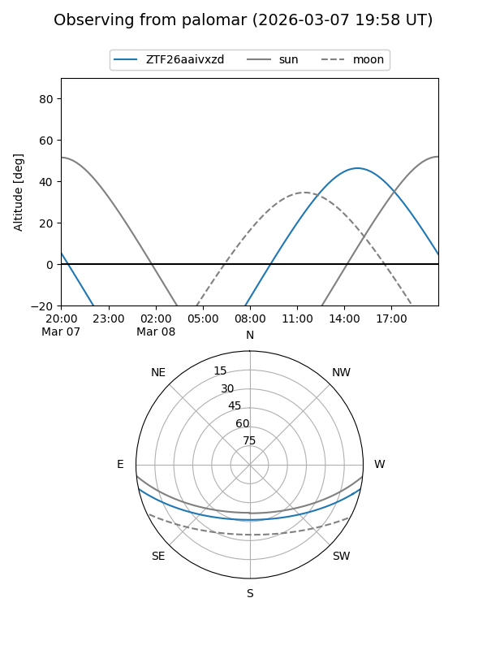

ZTF26aaivxzd
Target ZTF26aaivxzd at 2026-03-08 14:24
Aliases and brokers:
FINK: link
Lasair: link
ALeRCE: link
alt names
ZTF26aaivxzd (ztf,fink_ztf)
Coordinates:
equatorial (ra, dec) = 271.6783,-10.23697
equatorial (HMS+DMS) = 18:06:42.78,-10:14:13.09
galactic (l, b) = (18.6819,+5.09431)
Flags:
Photometry:
last ztfr=18.40
1 ztfr detections
Lightcurve

Visibility


Additional plots